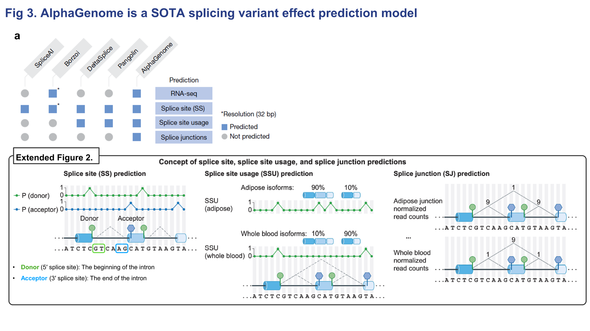
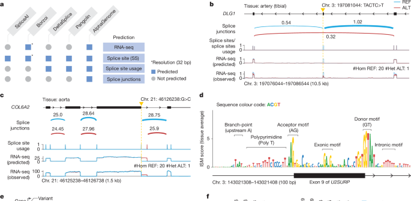
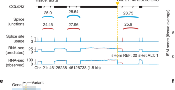
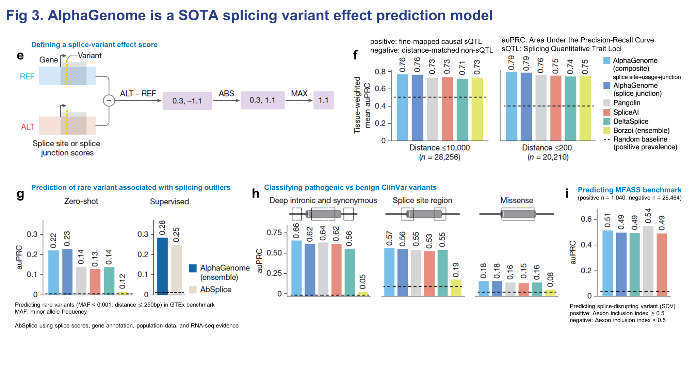

Figure 3. Splicing variant effect prediction¶
Panel A — 어떤 splice-related output을 예측하는가¶

Figure 3에서는 splicing variant가 일으키는 effect를 얼마나 잘 예측할 수 있는지를 보여줍니다.
패널 A에서는 먼저 Figure 3에 등장하는 비교 모델들의 특징이 정리되어 있습니다.
- SpliceAI: splice site prediction 중심의 초기 대표 모델
- Borzoi: RNA-seq과 splice site를 함께 예측하는 multi-task model
- DeltaSplice, Pangolin: splice site뿐 아니라 usage까지 다루는 specialist 계열
- AlphaGenome: 여기에 더해 splice junction prediction까지 수행
아래 도식은 이 차이를 더 직관적으로 설명합니다.
- splice site prediction: 각 위치가 donor인지 acceptor인지 분류
- splice site usage prediction: 특정 donor/acceptor site가 실제로 얼마나 자주 사용되는지 예측
- splice junction prediction: 실제로 어떤 exon과 exon이 얼마나 강하게 연결되는지를 직접 예측
즉, AlphaGenome의 차별점은 단순 site classification을 넘어서
junction 수준의 연결 정보까지 모델링한다는 점입니다.
Panels B–D — 예시 variant와 ISM 해석¶

패널 B에서는 artery의 DLG1 유전자에서 exon skipping이 발생한 예시를 보여줍니다.
실제 RNA-seq 결과를 보면 variant가 있는 샘플에서 특정 exon 부위의 signal이 감소하고,
모델 예측에서도 같은 위치에서 유사한 감소가 나타납니다.
즉, AlphaGenome이 단순히 전체 coverage만 맞추는 것이 아니라,
variant로 인해 특정 exon이 skip되면서 생기는 국소적인 splicing 변화까지 예측할 수 있다는 뜻입니다.
패널 C는 또 다른 예시로 COL6A2 유전자를 보여줍니다.
여기서는 splice donor site 부근의 variant로 인해 splicing pattern이 달라진 경우를 시각화합니다.

절대적인 y축 크기가 완전히 같지는 않을 수 있지만,
중요한 점은 어느 위치에서 어떤 방향의 변화가 일어나는지를 모델이 비교적 잘 포착하고 있다는 것입니다.
splice junction과 splice site usage 수준에서도 변화가 함께 반영됩니다.
패널 D는 성능 자체보다는 해석 가능성을 보여줍니다.
여기서 사용한 방법은 ISM (in silico mutagenesis) 입니다.
관심 구간에서 각 위치마다 가능한 염기 치환을 하나씩 넣어 보고,
그 변이가 splice junction score를 얼마나 바꾸는지를 계산합니다.
그 결과 canonical acceptor motif와 donor motif,
그리고 branch point, polypyrimidine tract, exon/intron 내부의 일부 splicing regulatory motif에서
모델이 큰 반응을 보이는 것을 확인할 수 있습니다.
즉, AlphaGenome이 단순히 통계적으로만 맞추는 것이 아니라
splicing grammar 자체를 학습했다는 흔적을 보여줍니다.
Panels E–I — variant effect score 정의와 benchmark¶

패널 E에서는 variant effect score를 어떻게 정의했는지를 설명합니다.
특정 유전자에서 변이가 발생했을 때, splice site 혹은 splice junction 예측값이 얼마나 달라지는지를 계산하고,
그중 가장 크게 변한 값을 그 variant의 effect score로 정의합니다.
Figure 3에서는 방향 자체보다 변화의 크기가 중요하므로 절대값을 취합니다.
패널 F에서는 이렇게 정의된 score를 사용해서
causal sQTL variant와 그 주변의 nearby non-causal variant를 구분합니다.
평가 결과, 10,000 bp window와 200 bp window 모두에서 AlphaGenome이 가장 좋은 성능을 보입니다.
여기서 200 bp와 10,000 bp의 차이는, positive variant 주위 어디까지를 negative candidate로 잡느냐의 차이라고 보면 됩니다.
즉, 200 bp 설정은 더 가까운 헷갈리는 variant 사이에서 구분해야 하므로 일반적으로 더 어려운 문제입니다.
특히 splice junction information만 사용해도 높은 성능이 나온다는 점이 중요합니다.
이는 donor/acceptor site만 보는 것보다 실제 exon–exon 연결을 직접 예측하는 정보가
variant effect prediction에 큰 도움을 준다는 뜻입니다.
패널 G는 rare variants associated with splicing outliers를 평가합니다.
MAF 0.001 이하라는 것은 allele 기준으로 천 개 중 하나,
사람이 allele을 두 개씩 가지므로 대략 500명 중 1명 carrier 정도의 드문 변이라고 이해할 수 있습니다.
이 zero-shot setting에서도 AlphaGenome은 기존 모델보다 더 좋은 성능을 보이고,
추가적인 supervised 학습을 붙였을 때도 강한 결과를 냅니다.
여기서 supervised 설정에서는 splice-related score 외에 RNA-seq coverage 차이까지 feature에 포함됩니다.
패널 H는 ClinVar benchmark입니다.
deep intronic + synonymous, splice site region, missense까지 여러 category에서
pathogenic vs benign 분류를 수행합니다.
이 결과는 AlphaGenome이 전형적인 splice-site variant뿐 아니라
보다 넓은 범위의 pathogenic variant classification에도 도움이 될 수 있음을 보여줍니다.
패널 I는 MFASS benchmark입니다.
이 데이터셋은 exon inclusion index를 크게 바꾸는 splice-disrupting variant를 평가하는 까다로운 benchmark입니다.
이 부분은 Figure 3에서 AlphaGenome이 유일하게 기존 최고 specialist model보다 약간 낮은 성능을 보인 사례입니다.
즉, 전반적으로는 매우 강하지만, 일부 특수 benchmark에서는 specialist model이 여전히 더 강할 수 있다는 점도 함께 보여줍니다.